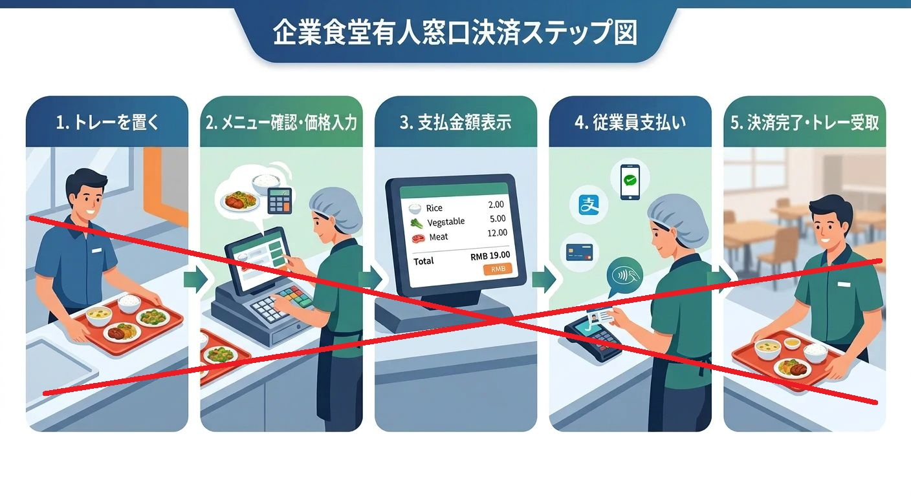
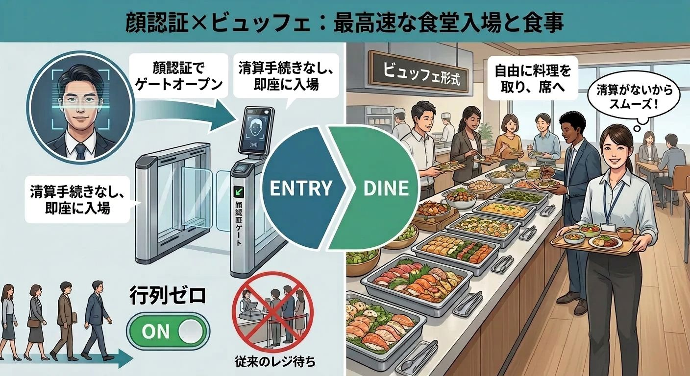

この記事でわかること
- 既存の3方式（画像認識・RFID・計量精算）でできることと、その限界
- 行列を根本からなくす「究極の方法」＝顔認証ゲート×一律清算の仕組み
- 究極方式のメリット・デメリットと、公平性・料金設定の課題
- この方式が向いている食堂タイプ
- 既存LPへの追記イメージ（見出し・テキスト案）
60分しかない昼休みのうち、10分以上を「レジの行列」で失っている——そんな声は、多くの社員食堂で共通の課題です。
出雲創安では、AI画像認識・RFID・計量精算という3つのスマート食堂ソリューションで、1人あたり3〜5秒の高速精算を実現してきました。しかし「行列そのものを、根本からなくしたい」というニーズに対しては、さらに一歩踏み込んだ究極の方法があります。
既存の3方式でできることと、限界
現在のスマート食堂ソリューションでは、以下の3方式から食堂に最適な精算方法を選定しています。
- 画像認識精算：トレーを置くだけで料理を約1秒で自動認識し、専用食器なしで運用可能
- RFID精算：RFID内蔵食器を置くだけで、1秒で30品以上を高精度に読み取り可能
- 計量精算：グラム単位で公平に課金し、ビュッフェ形式の食品ロスを大幅に削減
これらの方式は、レジでの「認識」と「決済」の時間を3〜5秒まで短縮し、行列とレジ人員を大きく削減します。それでも、ピーク時にはトレーを持った利用者がレジ前に滞留し、一定の行列はどうしても発生します。
行列をなくす究極の方法
「手動精算の5ステップを、完全にゼロにする」
行列を根本からなくすための究極の方法が、一律清算×顔認証ゲートという新しい精算コンセプトです。従来の有人レジやオートレジでは、以下のような5ステップの手動精算プロセスが必要でした。
- トレーを持ってレジに並ぶ
- 料理の認識（手動または自動）
- 合計金額の確認
- 支払い手段の準備・決済
- レシートなどの受け取り
究極の方法では、この5ステップそのものを完全に不要にします。

仕組み：顔認証ゲートで「利用者だけ」を特定し、一律料金を自動精算
究極方式の基本的な流れは、とてもシンプルです。
- 食堂入口に顔認証ゲートを設置し、入場時に利用者を特定する
- 入場した利用者は、食べる量に関わらず「1回利用あたりの一律料金」の対象になる
- 精算はバックエンドで自動処理され、レジでの認識・決済行為は一切発生しない
この方式では、トレー上の料理を認識する必要がなく、支払い操作も不要です。つまり、精算ステップそのものがゼロになるため、レジの前に「並ぶ」という行為が消え、行列は理論的に発生しなくなります。

実は、この究極方式は弊社の中国パートナーによって、すでに現地の社員食堂で実現されている実例です。中国の一部の社員食堂では、入口ゲートで顔認証を行い、利用者ごとに一定額を自動で精算する仕組みがすでに採用・運用されています。出雲創安は、この実績あるソリューションを日本市場に合わせてご提供できます。
メリット：行列ゼロと運営のシンプルさ
この究極方式には、従来の精算システムにはないメリットがあります。
- レジそのものが不要になり、精算待ちの行列が発生しない
- トレー上の料理認識が不要なため、システム構成がシンプルになる
- 現金・ICカード・QRコードなどの決済操作が不要で、利用者のストレスが大幅に減る
- 精算業務の人手をほぼゼロにでき、運営コストを削減しやすい
- 食堂の動線設計を「入るだけ・出るだけ」にでき、混雑のボトルネックをなくせる
昼休みの滞在時間を「食べる・休む」に最大限振り向けたい企業にとって、非常に魅力的な選択肢になります。
デメリット：公平性と料金設定の課題
一方で、この究極方式には明確なデメリットもあります。
- 食べる量が少ない人も、多い人も同じ金額を支払うため、少食の方から「割高感」の不満が出やすい
- 一律料金を高く設定すると、全体の利用率が下がる可能性がある
- カロリーコントロールや栄養管理の観点から、メニュー単位のデータ取得が難しくなる
そのため、運用にあたっては会社から食堂運営への補助金を設定し、利用者にとって魅力的な「低料金の一律価格」を実現することが重要になります。
導入が向いている食堂タイプ
この究極方式は、次のような条件を満たす食堂に向いています。
- 毎日一定以上の利用があり、利用頻度も高い大規模な社員食堂
- 「とにかく行列をなくしたい」「精算業務をゼロに近づけたい」という方針が明確な組織
- 会社として食堂を福利厚生の一環と捉え、一定の補助金を出せる環境
既存の3方式（画像認識・RFID・計量精算）は「公平性」と「精算スピード」を両立するソリューションとして有効です。そこに、福利厚生重視の企業向けオプションとして、顔認証ゲート×一律清算という究極方式を加えることで、「行列を減らす」だけでなく、「行列をなくす」という新しい選択肢を提示できます。
3方式と究極方式の比較
| 項目 | 既存の3方式（画像認識・RFID・計量） | 究極方式（顔認証ゲート×一律清算） |
|---|---|---|
| 精算スピード | 1人あたり3〜5秒 | 精算ステップ自体がゼロ |
| 行列 | 大幅に短縮（一定の滞留は残る） | 理論的に発生しない |
| 料理認識 | 必要（AI/RFID/計量で自動） | 不要 |
| 決済操作 | 顔認証・QR・ICカード | 不要（入場＝自動精算） |
| 公平性 | 食べた分・品目に応じて課金 | 量に関わらず一律（要・補助金設計） |
| 向いている食堂 | 公平性とスピードを両立したい食堂全般 | 福利厚生重視・大規模・行列ゼロ志向 |
迷ったら？ → お客様の食堂環境や運営方針をお伺いし、既存の3方式と究極方式のどちらが最適かをご提案します。実際の食堂で複数方式を試せる無料POC（概念実証）も実施しています。
📞 無料POCのお申し込み
AI画像認識・RFID・計量精算 — お客様の食堂に最適な方式を、実際の環境でテストいただけます。
機器の持ち込み・設置・回収まで当社が対応。費用は一切かかりません。